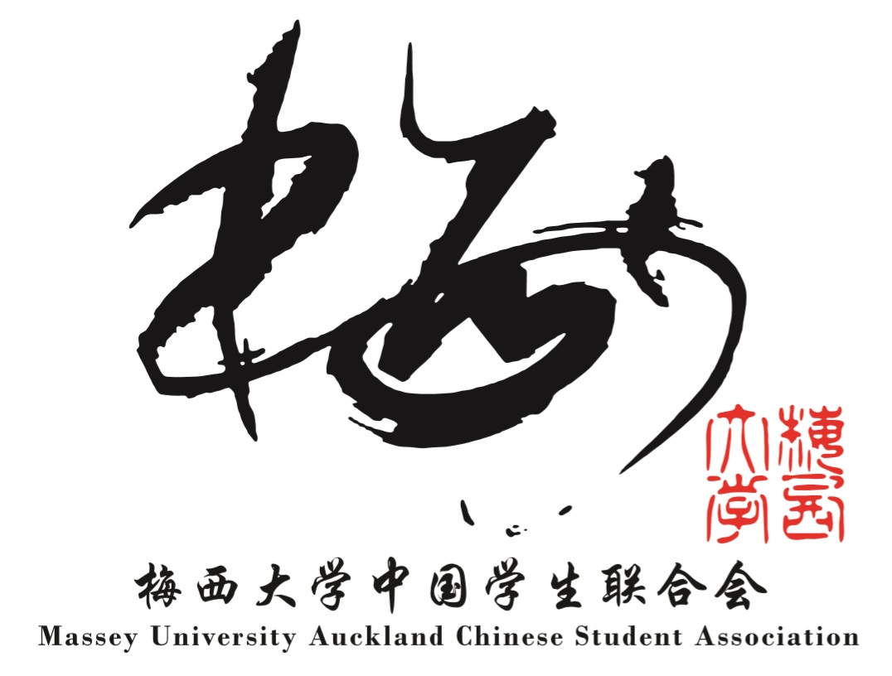

IT 大学毕业生就业免费讲座 - 梅西大学4月10日
本次讲座应梅西大学华人学生会邀请，于2019年4月10日晚6点在梅西大学SNW100 举行。
针对于大学IT类 学生，毕业生 提供就业讲座。
我们将在讲座中，向您道出新西兰IT行业招聘的一些内幕，分析很多毕业生找不到工作的原因，给广大毕业生们指明方向并提出一些建议避免走弯路。相信那些有志于在新西兰IT行业闯出一片天的毕业生们不会错过。
- 和 IT Professionals 交流谈话
- IT大学生怎样准备 就业
- 新西兰IT 行业职位 分析分享
- 新西兰IT 行业薪资 与 就业趋势
- IT毕业生的就业趋势
- 8个在新西兰IT最火的技术和经验
- 5个 IT 求助者最该具备的能力
主讲嘉宾介绍
Mike Li, Gradspace创始人，资深程序员, 培训师
Edwin Zhu, Gradspace创始人，资深软件培训师， 20 年 IT 行业经验， 从 Programmer 到 联想部门总经理
2019， 4月10号， 星期三， 6pm - 8pm
梅西大学 Massey University SNW100, 北岸
